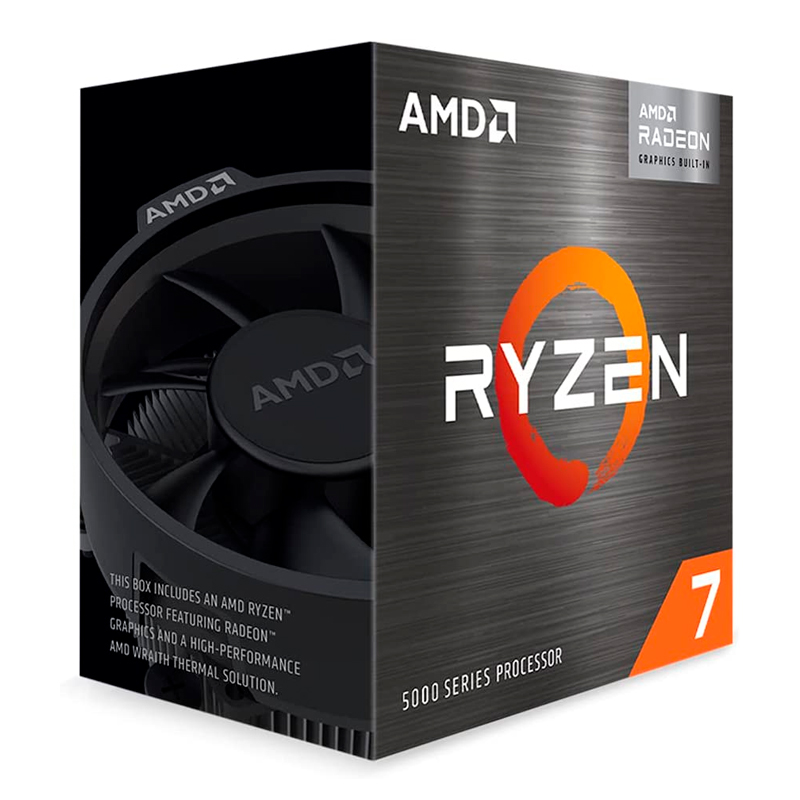
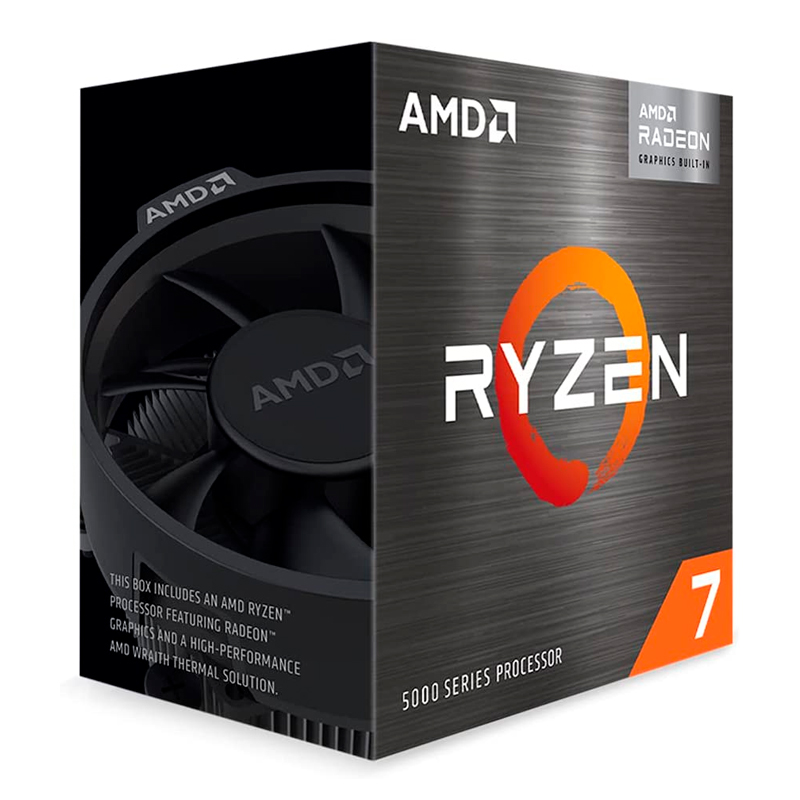

| Componente | Marca | Modelo | Descripción |
|---|---|---|---|
| Placa Base | ASUS | PRIME B550M-A AC | AMD Ryzen 5000 Series/ 5000 G-Series/ 4000 G-Series/ 3000 Series
4 x ranuras de memoria DDR4 / maximo de 128 GB Almacenamiento 2 x M.2 Key-M slots / 4 x SATA 6Gb/s Sonido Realtek ALC887/897 7.1 Surround Sound High Definition Audio CODEC 1 x Realtek RTL8111H 1Gb Ethernet (RJ-45) WLAN 802.11a/b/g/n/ac 2.4/5GHz Bluetooth 5.0 Formato mATX. |
| Procesador | AMD | Ryzen 7 5700G | 3.80 / 4.60GHz
8-Core 16MB L3 AM4 7nm 65W Graficos Radeon RX Vega 8 Presentacion en Caja Incluye Fan-Cooler |
| Memoria RAM | TEAMGROUP | T-FORCE VULCAN Z | TLZRD416G3200HC16F01
16GB DDR4-3200 MHz 1.35V CL16-20-20-40 |
| Almacenamiento | KINGSTON | NV2 | SNV2S/1000G
M.2 2280 PCIe 4.0 x4 NVMe Velocidad de escritura 2100 MB/s Velocidad de lectura 3500 MB/s. |
| Fuente de Poder | TEROS | TE-7175 | ATX
750W 80 Plus Gold 100V-240VAC CERTIFICADA 1 - Conector ATX/MB 20 + 4 Pines 2 - Conectores EPS/CPU 4 + 4 Pines 4 - Conectores PCI-e 8 Pines (6 + 2) 9 - Conectores SATA 6 - Conectores para Periféricos 4 Pines 2 - Conector para Floppy 4 Pines Fan de 12 cm |
| Gabinete | TEROS | TE-1174N | Mid Tower
Espacio para tarjetas gráficas de hasta 41 cm Espacio para coolers de CPU de hasta 16 cm Compatible con placas Micro-ATX, ATX, E-ATX y Mini-ITX Incluye ventiladores ARGB preinstalados Panel lateral de vidrio templado Filtros antipolvo Puertos USB 3.0 Control remoto No incluye fuente de alimentación. |